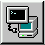

| Red Hat Linux 6.2: The Official Red Hat Linux Getting Started Guide | ||
|---|---|---|
| Prev | Chapter 3. KDE in 60 Seconds (or so) | Next |
In addition to changing your graphical environment at the login screen, you can "switch" to another environment when you're already logged in.
You can change environments using the Switchdesk utility (see Figure 3-13). Whether you're using GNOME, KDE or AnotherLevel, you can select your new environment in Switchdesk, then log out of your session. When you restart your session, you'll find your new environment.
Start Switchdesk from the shell prompt in an Xterm window. You'll find a quick launcher to an Xterm on the Panel; it looks like: 
To use Switchdesk, perform the following tasks:
Open an Xterm window
Type switchdesk at the prompt
Select your new environment and click OK
Close the Xterm window by typing exit
Log out and log in again
The next time you start your X session, you'll be in your newly selected environment.